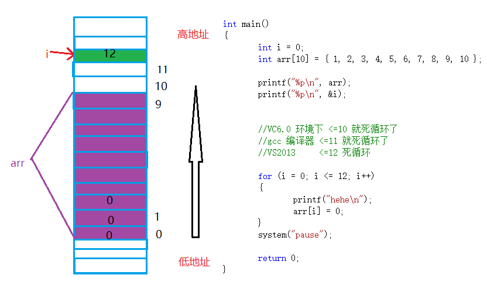
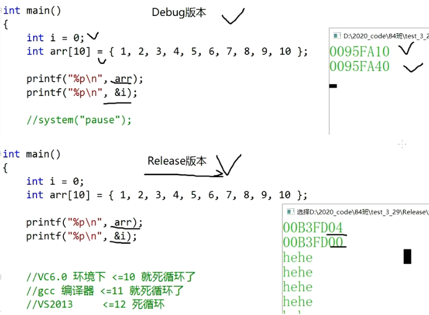

Debug和Release的介绍
Debug 通常称为调试版本，它包含调试信息，并且不作任何优化，便于程序员调试程序。
Release 称为发布版本，它往往是进行了各种优化，使得程序在代码大小和运行速度上都是最优的，以便用户很好地使用。
int main()
{
int i = 0;
int arr[10] = { 1, 2, 3, 4, 5, 6, 7, 8, 9, 10 };
printf("%p\n", arr);
printf("%p\n", &i);
//VC6.0 环境下 <=10 就死循环了
//gcc 编译器 <=11 就死循环了
//VS2013 <=12 死循环
for (i = 0; i <= 12; i++)
{
printf("hehe\n");
arr[i] = 0;
}
system("pause");
return 0;
}
死循环的原因：
main函数创建了i和arr是局部变量，存储在栈区，i在高地址创建，arr在i的低地址创建,所以在使用的过程中产生越界，可能arr会遇到i
- 栈区的默认使用 先使用高地址处的空间，在使用低地址处的空间
- 数组随着下标的增长，地址是由低到高的变化


常用快捷键 window
F5
启动调试，经常用来直接调到下一个断点处。
F9
创建断点和取消断点 断点的重要作用，可以在程序的任意位置设置断点。这样就可以使得程序在想要的位置随意停止执行，继而一步步执行下去。
F10
逐过程，通常用来处理一个过程，一个过程可以是一次函数调用，或者是一条语句。
F11
逐语句，就是每次都执行一条语句，但是这个快捷键可以使我们的执行逻辑进入函数内部（这是最常用的）。
CTRL + F5
开始执行不调试，如果你想让程序直接运行起来而不调试就可以直接使用。
如何写出好（易于调试）的代码
优秀的代码：
- 代码运行正常
- bug很少
- 效率高
- 可读性高
- 可维护性高
- 注释清晰
- 文档齐全
常见的coding技巧：
- 使用assert
- 尽量使用const
- 养成良好的编码风格
- 添加必要的注释
- 避免编码的陷阱
模拟实现库函数：strcpy
//void my_strcpy(char* dest, char* src)
//{
// while (*src != '\0')
// {
// *dest = *src;
// src++;
// dest++;
// }
// *dest = *src;//'\0'
//}
//void my_strcpy(char* dest, char* src)
//{
// if (dest != NULL && src != NULL)
// {
// while (*dest++ = *src++)
// {
// ;
// }
// }
//}
#include <assert.h>
char* my_strcpy(char* dest, const char* src)
{
char* ret = dest;
assert(dest != NULL);//断言
assert(src != NULL);//断言
//把src指向的字符串拷贝到dest指向的空间，包含'\0'字符
while (*dest++ = *src++)
{
;
}
return ret;
}
int main()
{
//strcpy
//字符串拷贝
char arr1[] = "#########";
char arr2[] = "bit";
printf("%s\n", my_strcpy(arr1, arr2));
return 0;
}
注意：
- 分析参数的设计（命名，类型），返回值类型的设计
- 这里讲解野指针，空指针的危害。
- assert的使用，这里介绍assert的作用
- 参数部分 const 的使用，这里讲解const修饰指针的作用
- 注释的添加
const的作用
const int num = 10;
int n = 100;
int * p = #
// const int * p = #
// int * const p = #
// const 放在指针变量的*左边时，修饰的是*p,也就是说：不能通过p来改变*p（num）的值
// const 放在指针变量的*右边是，修饰的是指针变量p本身，p不能被改变了
*p = 20;
p = &n;
printf("%d\n", num);
结论：
const修饰指针变量的时候：
- const如果放在*的左边，修饰的是指针指向的内容，保证指针指向的内容不能通过指针来改变。但是指针变量本身的内容可变。
- const如果放在*的右边，修饰的是指针变量本身，保证了指针变量的内容不能修改，但是指针指向的内容，可以通过指针改变.
模拟实现一个strlen函数 参考代码：
int my_strlen(const char *str)
{
int count = 0;
assert(str != NULL);//保证指针的有效性
while (*str != '\0')
{
count++;
str++;
}
return count;
}
int main()
{
char arr[] = "abcdef";
int len = my_strlen(arr);
printf("%d\n", len);
return 0;
}
编程常见的错误
常见的错误分类：
编译型错误
直接看错误提示信息（双击），解决问题。或者凭借经验就可以搞定。相对来说简单。
链接型错误
看错误提示信息，主要在代码中找到错误信息中的标识符，然后定位问题所在。一般是标识符名不存在或者拼写错误。
运行时错误
借助调试，逐步定位问题。最难搞。
练习
调整奇数偶数顺序
调整数组使级数全部都位于偶数前面
输入一个整数数组，实现函数。来调整数组中数字的顺序使的数组中所有的奇数位于数组的前半部分，所有偶数位于数组的后半部分。
//1.从左边开始找一个偶数
//2.从右边开始找一个奇数
//3.把他们交换
void move(int arr[], int sz)
{
int left = 0;
int right = sz - 1;
while (left < right) //若数组全为奇数，不加此句会导致越界访问
{
//从左边找偶数
while ((left < right) && (arr[left] % 2 == 1))
{
left++;
}
//从右边找奇数
while ((left < right) && (arr[right] % 2 == 0))
{
right--;
}
if (left < right)
{
int tmp = arr[left];
arr[left] = arr[right];
arr[right] = tmp;
}
}
}
void print(int arr[],int sz) {
for (int i = 0; i < sz; i++) {
printf("%d ", arr[i]);
}
}
int main()
{
//1 3 5 7 9 9 7 5 3 1
int arr[] = { 1,3,5,7,9 };
int sz = sizeof(arr) / sizeof(arr[0]);
move(arr, sz);
print(arr, sz);
return 0;
}